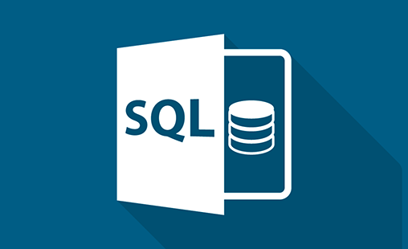

This project delves into the data job market with a focus on the data analyst role,
exploring top-paying positions,
in-demand skills, and areas where high demand aligns with high salaries in data analytics.
This project helps the ChocoFun company better understand how they are performing across various regions and identifies areas for improvement in their sales.
The dashboard provides insights into total orders by region, total sales, profit margin, top 5 customers, and more.
Its report offers a comprehensive analysis of how they can acquire new customers and increase their sales.
It provides an overview of both sales and orders.
The report consists of data from the years 2022, 2023, and 2024
This project delves into a large dataset of ultra marathon running, comprising over 7 million race records registered between 1978 and 2022. It was entirely built using Python and libraries such as Pandas, Matplotlib for charts and graphs, and Seaborn for visualizations. I analyzed athlete performance and their performance in the 50-mile and 50km races.

This project explores the NashvilleHousing data, emphasizing data cleaning for analysis. I
focus on standardizing date formats, populating property address data, breaking addresses
into individual columns (Address, City, State), changing "Y" and "N" to "Yes" and "No"
in the "Sold as Vacant" field, removing duplicates, and deleting unused columns.
This report provides a comprehensive overview of the HR dashboard across various departments,
job levels, and employee earnings and other key metrics. It helps HR monitor performance,
identify employees due for promotions,
and assess overall workforce dynamics.
This project helps healthcare providers better understand their performance across different regions and identify areas for improvement.
The dashboard provides insights into total medication costs,
treatment costs, billing amounts, total insurance, room charges,
out-of-pocket expenses, total billing by department,
and total billing amount by procedure.
This project focuses on various levels of investment that individuals engage with,
such as stocks,goverment bonds, equity markets, saving objectives and more.
It demonstrates my expertise in descriptive analysis, data visualization,
and highlights the potential of data-driven insights.
This project helps Apple & Peach Global better understand their sales performance from 2021 to 2023. It enables Apple & Peach Global to assess whether they are meeting their sales targets. By analyzing their sales data, they can identify areas needing improvement and recognize unique clients.